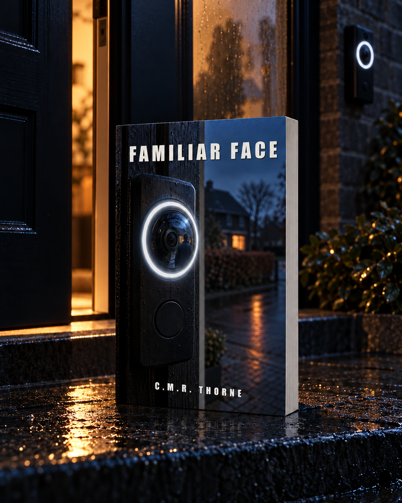

LOWLANDSPRESS
LOWLANDSPRESS

Reinier Klopper is the dentist in Zuiderwaard. He knows the state of half the village's teeth, and he's the kind of man who'd call that ordinary work. On an ordinary Saturday morning his neighbor shares a clip from her smart doorbell in the neighborhood app: there is a man at Reinier's own front door, and the app puts a name to the face. Ferdinand. His best friend from school, who has lived in Sweden for twenty years.
Eighteen neighbors have already seen the clip by the time Reinier knows one thing for certain: the man on the doorstep is not Ferdinand. Why he is so certain is something he has told no one in thirty-one years. In the summer of 1998, a classmate drowned in the Westeinderplassen, and Reinier was the kid on the path who told them only what he had seen. Not what he thought.
Within two weeks the village turns on the wrong man, and then another body turns up on Reinier's own street. To prove what really happened in 1998, he will have to say out loud what he has thought about his best friend for thirty-one years. And discover that a doorbell doesn't know faces. Only names.
A label is not a face.
Product details
- Publisher
- Lowlands Press
- Language
- English
- Published
- 2026-10-30
- Pages (Paperback)
- 506
- Pages (Hardcover)
- 408
- ASIN (Paperback)
- B0HPVT557H
- ISBN (Paperback)
- 979-8164584528
Read the opening
The opening of the book, the same pages a store lets you look inside. Read on at any of the stores above.
Prologue
vertigo ring 4 · voordeur waterlelie 49 · 06/10/2029 09:02:57 beweging: persoon · zone 'stoep 47' · live beeld beschikbaar bekend gezicht herkend: ferdinand (vriend reinier) label sinds 21/12/2016 · overeenkomst 0,91 deurbel 49: niet ingedrukt · opname loopt tik om te bekijken · delen · corrigeren
At 9:02 a.m., the phone on the kitchen table at Waterlelie 49 gave three tones, rising, and then said, in a voice that belonged to no one: known face recognized. Then a name.
It was raining. The water ran down the kitchen window in straight lines and pooled at the bottom of the frame. At the table was Herminia Klaver, sixty, in a gray cardigan buttoned to the top, reading glasses low on her nose. In front of her a planner lay open to the current week. Under Tuesday it said neighborhood council 20:00, and below that a single line in blue ballpoint, with an a that didn't close. Next to the planner, a mug of coffee still giving off steam. Next to the mug, the phone, screen up.
She set the pen in the fold of the planner and picked up the phone.
What was on the screen was not her own front step. The camera beside her front door looked off at an angle, across the low fence and along the hedge, and caught the front door of number 47 in the corner of the frame. Years ago she had given that corner a name of its own in the app. In that corner stood a man.
Herminia straightened her glasses and tapped the image. It filled the screen.
A man in a blue rain jacket, the hood half slipped off his head. Bald on the crown, light blond at the temples. He stood at the door of 47 and looked at that door, not at the camera that had him in frame from the side. Around his head the app drew a thin white square that moved with him. Beneath the square ran a line of text.
Ferdinand, friend of Reinier.
The man pressed the bell at 47. Once. Behind the small window beside the door it stayed dark, and on the mat the morning paper still lay in its plastic sleeve.
He waited. He didn't press a second time.
Herminia tapped share. The app asked where to. She chose the group at the top, Waterlelie & omstreken, and typed with one thumb, the glasses still on her nose:
Reinier, is that your friend Ferdinand at your door?
She hit send. Her question went to the top of the group, above a message about a trash bin the wind had knocked onto its side and a photo of a gray cat that hadn't come home since Thursday. Below the question a gray rectangle appeared with a small triangle in it: the clip, still loading.
She went back to the doorbell app.
On the front step the man looked at his watch. He turned halfway around, toward the camera, and the hood slid a little farther off his head. The square followed his face. The line beneath it didn't change. Then he walked down the step, along the fence, and out of the frame.
The app wrote person leaving frame, added the length of the recording, and filed the clip with the other clips from that week. Beneath the clip a question appeared in small type, Is this recognition correct?, with yes and no beside it.
Herminia put the phone down on the table, screen up.
She got up, walked down the hall to the front room, and pushed the sheer aside a hand's width. The front step of 47 was empty. The rain fell on the fence, on the paper in its sleeve, on the tiles of the porch, where the water sat in the seams. Nobody was on the bike path along the pond. She let the curtain fall back.
In the kitchen she sat back down. She turned the planner a quarter turn toward her, read what it said under Tuesday, and added nothing. She drank some of the coffee. Then she picked the phone up again and propped it against the mug, the screen facing her.
The neighborhood app was still open. Below her question a counter was running.
Waterlelie & omstreken · read by 18 · 09:04
Below the counter, thumbs-ups appeared, one after another, from people who already had their phones in their hands on a wet Saturday morning. Nobody wrote anything back.
Someone put a heart under it.
Chapter 1
Saturday began with a fog that wouldn't lift. Reinier sat in the folding chair in front of the cabin, both hands around a mug of coffee, looking out over the little lake the brochure had called a pond and which in this weather was closer to a swamp with willows in it. Jip had been standing at the water with his rod for a while now, somewhere off to the right, where the branches hung low. Sien had her book in her lap and wasn't reading. She was looking at the same water Reinier was, in the sweater of his he'd thought was lost, her knees drawn up under the wool.
Roosje sat beside him, in the same kind of chair but sunk deeper into it. She had noticed that he was somewhere other than in that chair; she'd noticed it before he had.
"Rein," she said. "You've looked at your phone three times."
"Herminia."
"What does she want?"
"She sent something."
He said it the way he told a patient a wisdom tooth had to come out: calmly, with a silence behind it that gave the other person a moment to ask one more thing. Roosje asked nothing. He took his phone from the pocket of his rain jacket and opened the neighborhood app, Waterlelie & omstreken. The message was at the top. Eighteen neighbors had read it; under the text were a few thumbs-ups and one heart.
Reinier, is that your friend Ferdinand at your door?
Below the question, a short clip, the thumbnail already filled in: the front step of their own house, from an angle. Reinier tapped the clip open. The picture jerked once as it started, and the app put its standard line under it, in a typeface nobody in the neighborhood had ever chosen. Vertigo Ring 4 · 06/10/2029 · 09:02:57 · front door waterlelie 49 · known face: Ferdinand.
There was a man on the front step. He wore a blue rain jacket with a hood that had half slipped back. He was looking at the door of Reinier's own house, past the hedge, not at Herminia's doorbell. His face came three-quarters into view; his head, bald on the crown and light blond at the temples, dipped forward as he pressed the bell. Nobody opened. The man waited, didn't press a second time, glanced at his watch. Then he turned halfway toward the camera. At that moment the hood slid back a little more and the rim of a pair of glasses came into view. A thin frame, round, the top rim a shade heavier than the bottom.
The clip stopped.
Reinier looked at the still water in front of him. Jip reeled in his line and cast again.
"Ferdinand?" Roosje said. "Hasn't he been in Sweden for twenty years?"
"He's been in Sweden for twenty years."
"Then what's he doing at our door?"
"That isn't him."
Roosje tilted her head, as if she wanted to hear the sentence one more time, in a different key. He let the phone lie in his lap, screen up, and didn't correct her.
"Herminia's app says it's him," Roosje said.
"Herminia's app says this face carries a label she entered once."
"The label Ferdinand."
"The label Ferdinand. That label is thirteen years old."
"And the face in that clip?"
He started the clip again. The man turned, the hood slid, the glasses came forward. Reinier froze the picture at the two-second mark and let his finger hover above the screen, as if pointing at something that wasn't there. The face hung there, half in the haze of the recording. It was the face of someone who looked like Ferdinand. Of someone who looked so much like Ferdinand that the little Reinier remembered of Ferdinand fit over it without effort, and that said more about his memory than about this face.
"Someone who looks like him," he said.
Roosje waited for him to say who.
He didn't. He looked at the glasses on the frozen frame and thought, against his will, something he hadn't thought in a long time: a jawline he couldn't have named as a boy because he wasn't a dentist yet, and a classmate who had walked into the cafeteria on the last day of school wearing someone else's glasses. The same round shape. The same slightly heavier top rim. Later, somewhere around the turn of the century, he had seen that frame once more, in a photo tucked into a birthday card that had gone around the Klopper house and then been thrown away.
"Rein."
"I'm not sure," he said, and that was true. "I do know it isn't Ferdinand."
He turned the phone off and set it on the ground between his shoes. He drank his coffee.
Down at the water Jip called out that he wasn't catching anything. Sien didn't react.
"I'll go keep him company," Reinier said, and he stood up.
He walked behind his son along the bank toward the willows. It was farther than he'd judged from the chair, and the ground was softer. Jip cast again; the float sank away among the leaves. Reinier crouched beside him on the bank.
"Dad," Jip said. "Sien didn't say anything this morning."
"No?"
"Not to me, not to you. She said good morning to Mom and that was it."
"Sien is seventeen," Reinier said. "Seventeen is an age when you don't always have to talk."
"So when do you have to talk?"
Reinier looked at the float. "When someone asks."
"Oh."
Jip reeled in, moved his float over a short way, and cast again. Apparently he found the answer sufficient. Reinier stayed crouched a moment longer and watched the water close over the sinker. Then he got to his feet.
On the way back to the chairs he held the phone loosely in his hand without looking at it. Sien was standing at the door of the cabin, the sweater now knotted around her shoulders, the book under her arm. She looked at him without changing anything in the way she stood.
"Dad," she said.
"Mom says Herminia sent something."
"Yes."
"What?"
"A clip of someone who was standing at our door."
Sien nodded. She pushed her flat hand against the doorpost, as if checking whether the wood would give.
"So who was standing at the door?"
"Someone who looked like an old friend of mine."
She nodded once more, slower now, and walked into the cabin without closing the door behind her.
Reinier sat back down in the folding chair. Roosje had gotten up to fetch fresh coffee, and the fog had lifted half a meter; the willows had their lower halves back. He picked up the phone, opened the clip again, and froze it in the same place as before.
The glasses. Round, thin frame, heavier on top than below.
The jaw visible beneath it, broad, with a short chin. The light blond hairs at the temple. He didn't know that face from yesterday or from last year. He knew it from the cafeteria at De Blauwe Poort, from the last day of school in junior year, when glasses had been swapped right before the class photo because somebody thought it was a good joke.
Thirty-one years ago. Ferdinand had spent the rest of the afternoon in someone else's frame, and in the photo he stood without his own glasses, and the teacher handing out the prints had said it out loud: Broeksma is spelled with a d at the end, people, not a t. As if the spelling were the only thing that needed setting straight that day.
Whoever was wearing the swapped glasses in that photo, to Reinier's left, with a broad jaw and a short chin, it hadn't been Ferdinand. Reinier had always known that the way you know which tooth is missing from a mouth: you see it at once, and you say it only when someone asks.
Reinier set the phone face down on his thigh. He drank his coffee to the bottom and held the mug in both hands until he could no longer feel the warmth. At the water Jip cast again; the sound of the sinker came a beat after the ring in the water. Inside the cabin Sien slid a chair across the floor somewhere, once, and after that it was quiet in there.
Roosje came back with the pot and filled his mug without asking. She sat down, looked at the little lake, then looked sideways.
"Rein," she said. "Then who is it?"
That's Diederik.